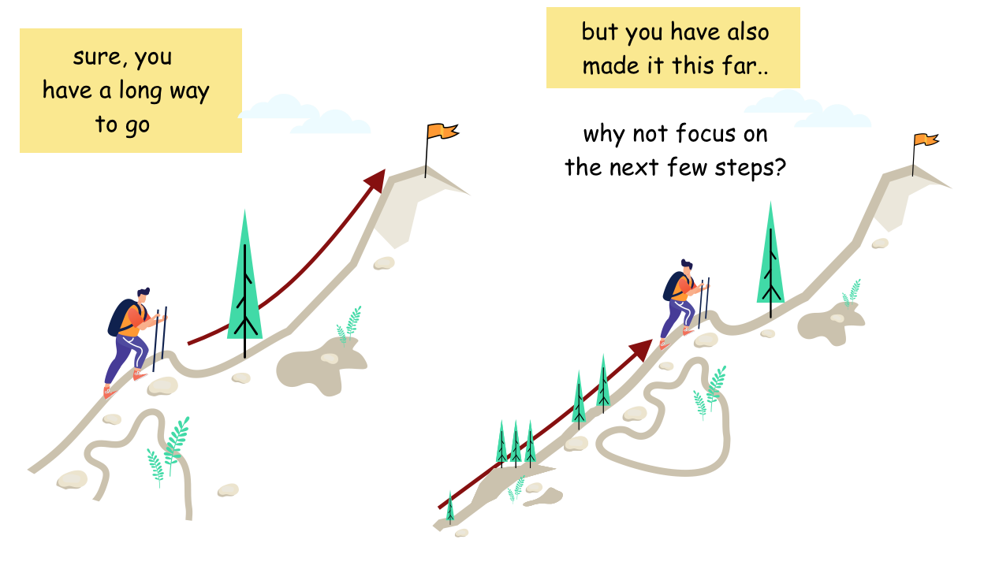

What's the one small thing you can work on right now?
'One small task at a time' is the secret to sustainable progress, even when you feel like you’ve hit a brick wall. Disregard the complexity that may or may not be ahead. Work on one current task with all your focus.
